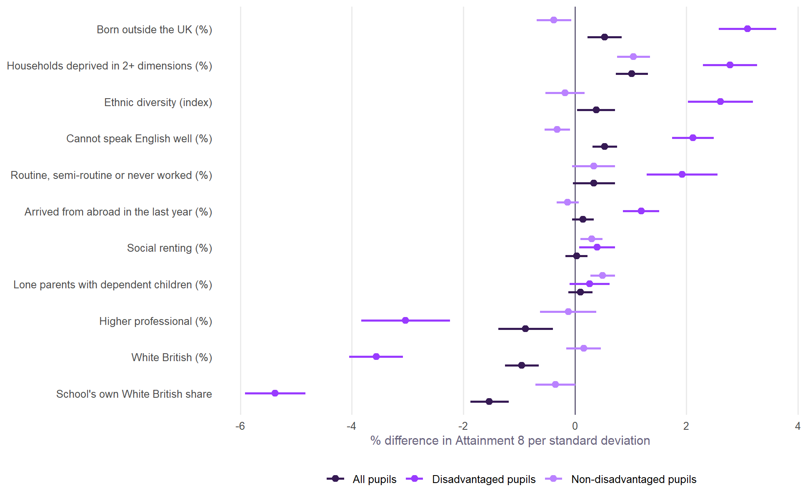
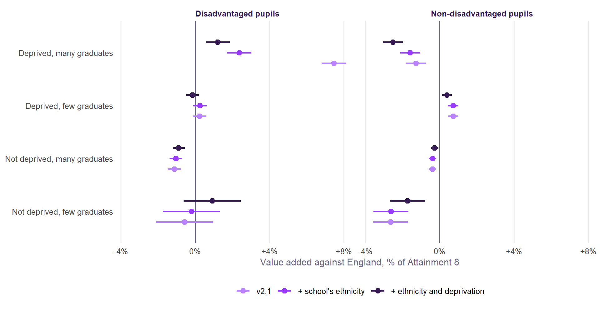
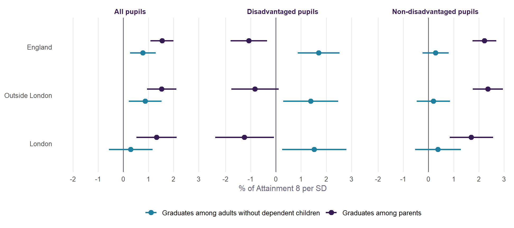
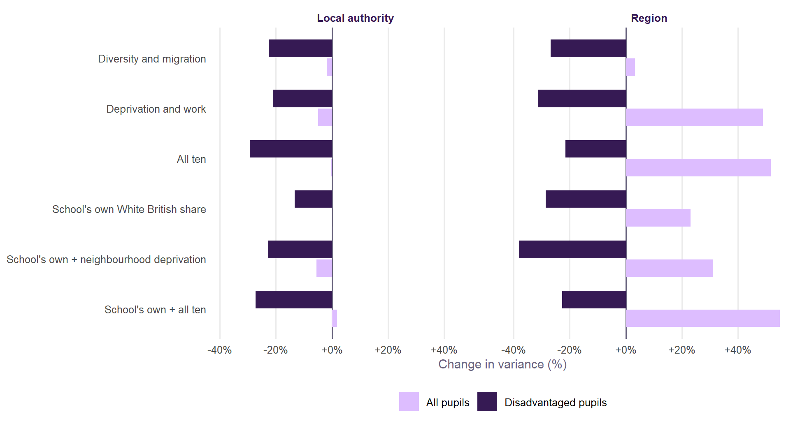

Neighbourhood covariates
An experiment: ten Census 2021 measures of diversity, migration, deprivation and work, added one at a time to Value Added v2.1. Do they explain the place effects, or something else?
NoteAn experiment, not a change to the model
Value Added v2.1 is unchanged. This page tests candidate terms, on the same school-years and the same specification, to see what they would do. Everything is published data: Census 2021 tables for Output Areas and the January 2026 school census.
ImportantIn short
- The largest gain is not a place measure. It is the school’s own share of White British pupils, which v2.1 does not have. For disadvantaged pupils, one standard deviation more goes with -5.4% Attainment 8, all else equal. For non-disadvantaged pupils it is close to nothing (-0.3%). Once it is in, the neighbourhood’s ethnic make-up adds little: what looked like a neighbourhood effect was mostly who the pupils are.
- Neighbourhood deprivation, beyond qualifications, does matter. At the same share of graduates, more multiply deprived households around a school go with higher results for every group. This survives the school’s own composition: +1.5% per standard deviation for disadvantaged pupils, +1.1% for non-disadvantaged pupils and +0.7% for all pupils.
- Together they take a fifth off the local authority effects for disadvantaged pupils, and over a third off the regional ones. They take less off authority effects for non-disadvantaged pupils (9%) and all pupils (6%), and regional effects grow for both.
- A third or more of Brighton and Hove’s effect goes with these measures, for all three groups. Its neighbourhoods are more deprived than their graduate share suggests.
The measures
Each is built exactly as neighbourhood education is: the average over the 150 Output Areas nearest each school, standardised across schools.
| Measure | Census 2021 table |
|---|---|
| White British (%); ethnic diversity (the chance two residents are from different groups, across 19) | TS021 |
| Born outside the UK (%) | TS004 |
| Cannot speak English well or at all (%) | TS029 |
| Arrived from abroad in the last year (%) | TS019 |
| Households deprived in two or more of four dimensions: employment, education, health, housing (%) | TS011 |
| Social renting (%) | TS054 |
| Routine, semi-routine or never worked (%); higher professional (%) | TS062 |
| Lone parents with dependent children (%) | TS003 |
Several move together closely. White British and born outside the UK correlate at -0.97. Higher professional correlates with neighbourhood education at 0.91, and routine work with it at -0.81. So read the measures in families, not one by one. To these is added the school’s own share of White British pupils (January 2026 census). It is a pupil measure, not a neighbourhood one, and v2.1 has no pupil ethnicity, only English as an additional language.
One at a time
For all pupils the effects are small: about one per cent per standard deviation, or a little more. For disadvantaged pupils they are three to five times larger. Disadvantaged pupils do better around schools in diverse, migrant, less English-speaking and more deprived neighbourhoods, and worse in White British and professional ones. The school’s own White British share is the strongest single term: -5.4% for disadvantaged pupils and -1.5% for all.
For non-disadvantaged pupils the ethnic and migration measures are close to zero: -0.3% for the school’s own White British share and +0.2% for the neighbourhood’s. So what shows up on those measures for all pupils comes mostly from the disadvantaged pupils among them. Deprivation is different. It is as strong for non-disadvantaged pupils (+1.0%) as for all pupils (+1.0%).
Composition or place?
A neighbourhood’s ethnic make-up and a school’s pupils go together. The question is whether the neighbourhood matters beyond who the pupils are. With the school’s own White British share in the model:
| Model | Group | Term | % per SD | t |
|---|---|---|---|---|
| School's own + neighbourhood White British | All pupils | School's own White British share | -1.4 | -6.3 |
| Neighbourhood White British | -0.3 | -1.4 | ||
| Disadvantaged pupils | School's own White British share | -4.6 | -13.0 | |
| Neighbourhood White British | -1.2 | -3.8 | ||
| Non-disadvantaged pupils | School's own White British share | -0.7 | -3.1 | |
| Neighbourhood White British | +0.5 | 2.6 | ||
| School's own + neighbourhood deprivation | All pupils | School's own White British share | -1.3 | -6.9 |
| Neighbourhood deprivation (2+ dimensions) | +0.7 | 4.5 | ||
| Disadvantaged pupils | School's own White British share | -4.8 | -16.2 | |
| Neighbourhood deprivation (2+ dimensions) | +1.5 | 5.9 | ||
| Non-disadvantaged pupils | School's own White British share | +0.0 | 0.2 | |
| Neighbourhood deprivation (2+ dimensions) | +1.1 | 6.7 |
- Ethnicity is mostly composition. With the school’s own share in, the neighbourhood’s White British share shrinks from -3.6% to -1.2% for disadvantaged pupils, and to nothing clear for all pupils (-0.3%, t -1.4). For non-disadvantaged pupils both terms are small and pull opposite ways: -0.7% for the school and +0.5% for the neighbourhood. For disadvantaged pupils, the model fits barely better with both than with the school’s own share alone (AIC -360 against -348).
- Deprivation is place. Neighbourhood deprivation keeps its effect alongside the school’s composition: +1.5% per SD for disadvantaged pupils (t 5.9), +1.1% for non-disadvantaged pupils (t 6.7) and +0.7% for all. At the same share of graduates and the same pupils, a school in a more multiply deprived neighbourhood does a little better. The next section asks why.
Two kinds of deprived neighbourhood
Why would more deprivation, at the same share of graduates, go with better results? One idea is that this is the inner city, near universities and above all London: neighbourhoods full of recent graduates who are culturally and educationally rich but not yet financially so, unlike deprived towns without graduate jobs. The geography is right. The schools in the top third of England for neighbourhood deprivation split into two very different kinds of place:
| Deprived, many graduates | Deprived, few graduates | |
|---|---|---|
| Schools | 163 | 708 |
| In London (%) | 81.0 | 0.1 |
| Near a university (%) | 79.8 | 25.6 |
| Aged 25 to 34 (%) | 20.9 | 13.7 |
| Private renting (%) | 32.9 | 20.1 |
| Overcrowded households (%) | 14.8 | 5.4 |
| Bad or very bad health (%) | 5.1 | 7.2 |
| Long-term sick or disabled (%) | 4.7 | 6.5 |
| Adults with degree-level qualifications (%) | 44.5 | 22.7 |
| Disadvantaged pupils (FSM6, %) | 45.6 | 38.4 |
| White British pupils (%) | 13.4 | 62.6 |
Deprived neighbourhoods with many graduates are 81% London, and 80% are near a university. They are young, privately rented and overcrowded. Deprived neighbourhoods with few graduates are almost none of those; they are older and sicker. The authorities with most such schools are Newham, Tower Hamlets, Hackney, against Birmingham, Lancashire, Bradford.
Disadvantaged pupils do far better in the first kind, but most of that is who they are.

Under v2.1, disadvantaged pupils in deprived, graduate-rich neighbourhoods are +7.5% above expectation, and in deprived, low-graduate ones +0.2%. The schools in the first group have 13% White British pupils, against 63% in the second. With that allowed for, the lead falls to +2.4%: two-thirds of it is composition. The rest is real but modest.
Non-disadvantaged pupils in the same deprived, graduate-rich neighbourhoods are at -1.3%. All pupils, at +0.2%, mix the two, so the figure for all pupils hides how differently the two groups do in these places.
Does the graduate idea explain the deprivation effect itself? It makes four predictions, and the data support it only in part:
| If it is recent graduates, the deprivation effect should… | What the data show |
|---|---|
| grow with neighbourhood education | No. The interaction is +0.01% for disadvantaged pupils, -0.30% for non-disadvantaged (the wrong way) and -0.10% for all pupils |
| sit in London and near universities, not in low-graduate places | In part. For disadvantaged pupils it is +1.6% in London and +1.6% near universities, but also +1.1% in low-graduate places. For non-disadvantaged pupils it is largest in low-graduate places (+1.5%). For all pupils it is much the same in all three (+0.9%, +0.6%, +0.6%) |
| go once early-career measures are in | No. It stays at +1.3% for disadvantaged pupils, rises to +1.7% for non-disadvantaged and is +1.0% for all pupils |
| be overcrowding, not ill health | In part. Overcrowding is positive for disadvantaged pupils (+1.5%), but so is bad health (+2.3%). For non-disadvantaged pupils overcrowding adds little (+0.3%) and bad health more (+0.9%). For all pupils they are +1.0% and +1.4% |
So the small deprivation term is not a recent-graduate effect. It appears in both kinds of place, for reasons this page cannot separate.
But the graduates may matter in a different way. Two results point the same way. In deprived, graduate-rich neighbourhoods, non-disadvantaged pupils do worse than expected (-1.3%). And at the same share of graduates, more young adults go with slightly lower results for every group (-0.8% for all pupils). A likely reading is that many recent graduates are not the pupils’ parents. Neighbourhood education counts every adult, so young and often childless graduates raise it, and v2.1 then expects more of the local schools than their families warrant. The next section tests that directly.
Parents, not adults
Neighbourhood education counts every adult. Custom Census 2021 tables from ONS allow something closer to the pupils’ families: level 4+ qualifications among adults aged 25 to 64 in households with dependent children, published by MSOA, the finest level available. Limiting the age leaves out 16 to 18 year olds who are themselves dependent children. Each measure is averaged over a school’s same 150 nearest Output Areas, and all adults are rebuilt at MSOA level too, so differences are about who is counted, not the coarser map.
The measure is distorted where the idea says it should be.
| Neighbourhood | Schools | All adults | Parents | Adults without dependent children |
|---|---|---|---|---|
| Deprived, many graduates | 163 | 44.8% | 45.3% | 53.7% |
| Deprived, few graduates | 708 | 23.3% | 29.5% | 26.8% |
| Not deprived, many graduates | 660 | 44.9% | 57.4% | 49.4% |
| Not deprived, few graduates | 30 | 26.2% | 34.6% | 29.8% |
Deprived, graduate-rich neighbourhoods and comfortable graduate-rich ones look identical on all adults (44.8% and 44.9%). Among parents they are 12 points apart (45.3% and 57.4%). In the first, adults without children are the graduates; in the second, parents are.
Measuring parents explains two of the three puzzles.
| Result | All adults | Parents |
|---|---|---|
| Young adults' effect, all pupils | -1.0% | -0.2% |
| Young adults' effect, disadvantaged | -0.5% | -0.1% |
| Young adults' effect, non-disadvantaged | -1.1% | -0.2% |
| Young adults' effect, boys | -1.0% | -0.1% |
| Neighbourhood deprivation's effect, all pupils | +1.2% | +1.1% |
| Neighbourhood deprivation's effect, disadvantaged | +1.6% | +1.2% |
| Neighbourhood deprivation's effect, non-disadvantaged | +1.6% | +1.8% |
| Value added in deprived, graduate-rich places, all pupils | +0.2% | +2.0% |
| Value added in deprived, graduate-rich places, disadvantaged | +7.5% | +8.4% |
| Value added in deprived, graduate-rich places, non-disadvantaged | -1.3% | +0.5% |
The penalty for young adults almost disappears, and so does the shortfall for non-disadvantaged pupils in deprived, graduate-rich places. Those were artefacts of counting adults who are not parents. The deprivation effect does not go. It is not a by-product of the qualification term, for any group.
But parents alone are not a better term. Used in place of all adults, parents improve the model for non-disadvantaged pupils and make it slightly worse for the other four groups. Both together are better for all five.
| Group | Parents: AIC | Parents: error | Both: AIC | Both: error |
|---|---|---|---|---|
| All pupils | +14 | +0.14% | -20 | -0.10% |
| Disadvantaged | +18 | +0.14% | -67 | -0.35% |
| Non-disadvantaged | -48 | -0.06% | -51 | -0.13% |
| Girls | +17 | +0.16% | -13 | -0.09% |
| Boys | +10 | +0.11% | -20 | -0.11% |
With both in, the two groups of pupils respond to different graduates.

- Non-disadvantaged pupils’ results follow graduate parents (+2.2%, t 9.3). Other graduates nearby add nothing clear (+0.3%). This holds inside and outside London. It is what a measure of family background should do.
- Disadvantaged pupils do better near graduates who are not parents (+1.7%, t 4.0), and a little worse near graduate parents (-1.1%). That appears in London and outside it, so it is not simply a London effect. It is smaller than it first looks: about 60% of the split goes once the school’s ethnicity is allowed for, and outside London the parents’ side is no longer clear.
- All pupils sit between the two (+1.5% for graduate parents, t 6.6; +0.8% for other graduates, t 3.0). They mix two groups that respond in opposite ways to graduate parents.
The second result fits the idea that young graduates bring something to a neighbourhood that reaches disadvantaged pupils. It fits other stories too. Disadvantaged pupils among graduate parents may be more isolated, or more disadvantaged within their school. The two measures also overlap heavily (correlation 0.88), so the split rests on the places where they differ. It is an association to follow up, not a finding about cause.
For the model. Neighbourhood deprivation survives with parents measured properly, so the case for it in v2.2 stands. Splitting neighbourhood education into parents and other adults would help every group a little, and is a further candidate. Parents here means adults aged 25 to 64 in a household with a dependent child, which also takes in some grandparents and older siblings, at MSOA level.
Do they explain the place effects?

For disadvantaged pupils, the school’s composition with neighbourhood deprivation takes 23% off the local authority variance and 38% off the regional variance. Part of why disadvantaged pupils do better in London and some cities than in the South East or coastal towns is who the pupils are and what their neighbourhoods are like, at the same intake otherwise.
For all pupils, authority effects barely change and regional ones grow. Non-disadvantaged pupils are much the same: the authority variance falls by 9% and the regional variance rises by 15%. The measures account for differences within regions, which leaves the differences between them larger. For most pupils, what makes an authority’s schools do better is not in these measures.
Brighton and Hove
| Model | All pupils | Disadvantaged | Non-disadvantaged |
|---|---|---|---|
| Baseline (v2.1) | +3.6% | +3.9% | +3.6% |
| School's own White British share | +3.9% | +4.6% | +3.6% |
| Households deprived in 2+ dimensions (%) | +2.9% | +1.9% | +2.9% |
| School's own + neighbourhood deprivation | +3.4% | +3.5% | +2.8% |
| School's own + deprivation and work | +2.4% | +2.4% | +2.0% |
| School's own + all ten | +2.5% | +2.9% | +1.9% |
Brighton and Hove’s effect is one of the largest in England (its own page). Its schools’ pupils are mostly White British, so adding the school’s composition, if anything, raises the effect. Neighbourhood deprivation and work lower it, from +3.6% to +2.4% for all pupils, from +3.9% to +2.4% for disadvantaged pupils, and from +3.6% to +2.0% for non-disadvantaged pupils. The city’s neighbourhoods have many graduates, but also more households deprived on the Census measures than that suggests. Neighbourhood education alone makes them look more advantaged than they are. Between a third and a half of the effect goes with that, depending on the group; the rest is still unexplained.
What it means for the model
- A candidate for v2.2: pupils’ ethnicity. DfE’s contextual value added, in the performance tables until 2011, included pupils’ ethnicity. Progress 8 does not, and nor does v2.1. The evidence here is that leaving it out matters most for disadvantaged pupils, and hardly at all for non-disadvantaged pupils. Whether to put it in is a question of what the measure is for. Adjusting for it would stop schools with many White British disadvantaged pupils looking worse for it. It would also take a real difference in results out of view. It belongs with the review’s other recommendations.
- A candidate for neighbourhood: deprivation beside education. Adding household deprivation to neighbourhood education improves the model for every group. It is not specific to graduate-rich places (above), and a measure of parents’ qualifications may do the job better.
- What is left of place. Even with all of it, most of the local authority effects remain, especially for all and non-disadvantaged pupils. What makes some authorities’ schools do better than their intakes predict is not in the Census.
How it was done
Each model is the full v2.1 specification for its group, with the same random effects for year and region/local authority, fitted by maximum likelihood so that AIC can be compared. Every fit uses the same 12,620 school-years for all pupils, 12,483 for disadvantaged pupils and 12,483 for non-disadvantaged pupils (those with every measure). The school’s own White British share is from January 2026 and is used for every year, since earlier school census files in the performance tables do not include ethnicity. Neighbourhoods are the 150 nearest Output Areas to the school, not pupils’ homes.
| Group | Model | % per SD | AIC change | Authority variance | Region variance |
|---|---|---|---|---|---|
| All pupils | White British (%) | -0.95 | -36 | -5% | +27% |
| Ethnic diversity (index) | +0.38 | -3 | -2% | +10% | |
| Born outside the UK (%) | +0.53 | -10 | -4% | +12% | |
| Cannot speak English well (%) | +0.54 | -20 | -3% | +7% | |
| Arrived from abroad in the last year (%) | +0.14 | -0 | -1% | -0% | |
| Households deprived in 2+ dimensions (%) | +1.02 | -46 | -9% | +13% | |
| Social renting (%) | +0.03 | 2 | -0% | +0% | |
| Routine, semi-routine or never worked (%) | +0.34 | -1 | -2% | -2% | |
| Higher professional (%) | -0.88 | -10 | -1% | -6% | |
| Lone parents with dependent children (%) | +0.10 | 1 | -0% | +2% | |
| Diversity and migration | -16 | -2% | +3% | ||
| Deprivation and work | -94 | -5% | +49% | ||
| All ten | -132 | -0% | +52% | ||
| School's own White British share | -1.53 | -73 | -0% | +23% | |
| School's own + neighbourhood White British | -73 | -1% | +30% | ||
| School's own + diversity and migration | -77 | +1% | +5% | ||
| School's own + neighbourhood deprivation | -91 | -6% | +31% | ||
| School's own + deprivation and work | -137 | -1% | +81% | ||
| School's own + all ten | -159 | +2% | +55% | ||
| Disadvantaged pupils | White British (%) | -3.56 | -196 | -23% | -23% |
| Ethnic diversity (index) | +2.61 | -76 | -11% | -12% | |
| Born outside the UK (%) | +3.10 | -136 | -23% | -22% | |
| Cannot speak English well (%) | +2.12 | -122 | -15% | -23% | |
| Arrived from abroad in the last year (%) | +1.19 | -49 | -7% | +7% | |
| Households deprived in 2+ dimensions (%) | +2.78 | -123 | -24% | -34% | |
| Social renting (%) | +0.40 | -4 | -3% | -7% | |
| Routine, semi-routine or never worked (%) | +1.92 | -33 | -12% | -14% | |
| Higher professional (%) | -3.04 | -52 | -8% | -19% | |
| Lone parents with dependent children (%) | +0.26 | -0 | -1% | -4% | |
| Diversity and migration | -136 | -23% | -27% | ||
| Deprivation and work | -163 | -21% | -31% | ||
| All ten | -283 | -29% | -22% | ||
| School's own White British share | -5.38 | -348 | -13% | -29% | |
| School's own + neighbourhood White British | -360 | -16% | -26% | ||
| School's own + diversity and migration | -371 | -22% | -36% | ||
| School's own + neighbourhood deprivation | -380 | -23% | -38% | ||
| School's own + deprivation and work | -405 | -20% | -25% | ||
| School's own + all ten | -440 | -27% | -23% | ||
| Non-disadvantaged pupils | White British (%) | +0.16 | 1 | +1% | -5% |
| Ethnic diversity (index) | -0.18 | 1 | +1% | -6% | |
| Born outside the UK (%) | -0.38 | -4 | +2% | -11% | |
| Cannot speak English well (%) | -0.32 | -6 | +1% | -6% | |
| Arrived from abroad in the last year (%) | -0.13 | 0 | +1% | +0% | |
| Households deprived in 2+ dimensions (%) | +1.05 | -46 | -9% | +15% | |
| Social renting (%) | +0.30 | -7 | -2% | +3% | |
| Routine, semi-routine or never worked (%) | +0.34 | -1 | -1% | -4% | |
| Higher professional (%) | -0.12 | 2 | -0% | -1% | |
| Lone parents with dependent children (%) | +0.50 | -18 | +0% | +10% | |
| Diversity and migration | -1 | +2% | -4% | ||
| Deprivation and work | -103 | -7% | +93% | ||
| All ten | -119 | -9% | +52% | ||
| School's own White British share | -0.35 | -2 | +0% | +7% | |
| School's own + neighbourhood White British | -6 | +2% | -4% | ||
| School's own + diversity and migration | -12 | +3% | -3% | ||
| School's own + neighbourhood deprivation | -44 | -9% | +15% | ||
| School's own + deprivation and work | -101 | -7% | +96% | ||
| School's own + all ten | -123 | -9% | +54% |
Built by R/13_neighbourhood_covariates.R.